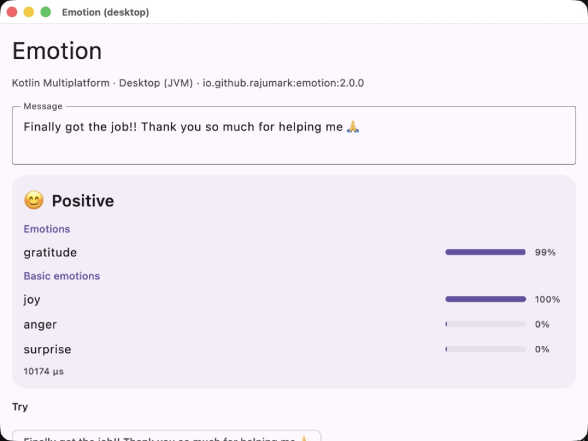
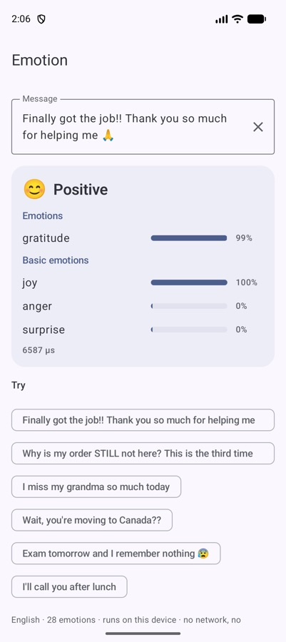
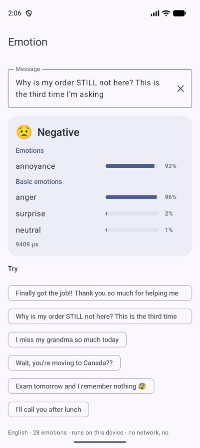
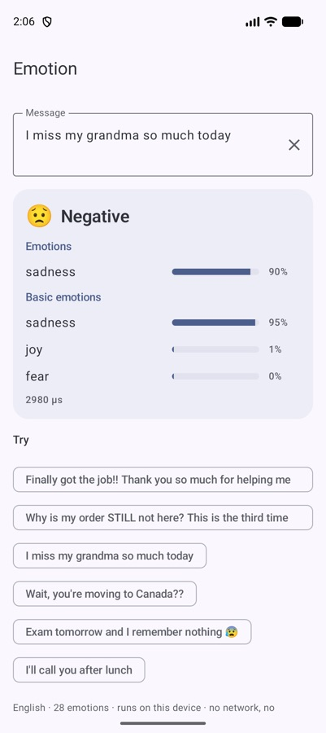

“Only 38%?” — 12 questions about detecting emotions on the device
If I were evaluating an emotion model for my app, I would have twelve questions, starting with the obvious one. So instead of an article, here are those questions, with straight answers.

What does it actually do?
You give it an English message. It tells you which emotions the message carries — several at once if there are several — each with a score, plus an overall mood: positive, negative, ambiguous or neutral.
emotion.detect("Exam tomorrow and I remember nothing 😰")
// mood = NEGATIVE, emotions = [nervousness 0.96]
emotion.detect("Finally got the job!! Thank you so much for helping me 🙏")
// mood = POSITIVE, emotions = [gratitude 0.99]Which emotions?
The 27 from Google's GoEmotions research, plus neutral:
It also maps them onto Ekman's six basic emotions (anger, disgust, fear, joy, sadness, surprise) for apps that want something coarser.
Isn't this just sentiment analysis?
Sentiment says “negative”. Emotion says which negative. “Why is my order STILL not here?” is annoyance. “I miss my grandma so much today” is sadness. Both are negative, and a support app should answer them very differently.



Only 38%? That sounds bad.
It's the question everyone asks first, so here's the full table. Two test sets, neither used for training: 107 fresh everyday messages I wrote after training (many with an implied emotion), and the GoEmotions test set of 5,427 Reddit comments.
| Emotion | RoBERTa-base | MiniLM | ModernBERT-large | |
|---|---|---|---|---|
| Everyday messages: top emotion right | 38.3% | 35.5% | 33.6% | 33.6% |
| Everyday messages: mood right | 46.7% | 40.2% | 43.0% | 35.5% |
| GoEmotions: top emotion right | 61.0% | 63.6% | 60.6% | 66.2% |
| GoEmotions: macro-F1, 28 emotions | 0.475 | 0.522 | 0.510 | 0.538 |
| Size | 6.4 MB | 499 MB | 121 MB | 1.6 GB |
| Latency, 1 CPU thread (laptop) | ~0.3 ms | ~17 ms | ~2.6 ms | ~60 ms |
Picking one right answer out of 28 is hard, and emotions are subjective: human raters disagree with each other constantly. 38% is the best score in that row, ahead of a model 78× larger and 60× slower.
So it beats the big models?
On everyday messages, yes. On GoEmotions' own Reddit comments, no — the large models are ahead there, and I'd rather say that than hide the row. The difference is the kind of text. Reddit comments usually name the feeling. Everyday messages usually imply it.
What do you mean by “implied”?
“Waiting outside the principal's office” contains no emotion word. It's nervousness. “The scan came back clear” is relief. Most people don't write “I feel relieved”; they write what happened. Emotion was trained with extra everyday sentences written specifically for feelings that GoEmotions models miss, which is where its lead on everyday messages comes from.
Does it understand emoji and slang?
Yes. One of its two input streams reads hashed words, word pairs and character pieces, which makes it robust to typos, slang and emoji. The 😰 in the exam message pulls hard towards nervousness.
How is 6.4 MB possible?
The model has 6.0M parameters. One stream reads those hashed pieces; the other reads SentencePiece tokens through four small transformer layers with attention pooling. A small network on top gives the 28 emotion scores and the basic-emotion scores. Weights are stored as 8-bit integers with one scale per row. It learned from GoEmotions, XED and BRIGHTER, and from about a million everyday sentences labelled by a large GoEmotions model.
How fast is it on a phone?
About 3–5 ms per message on an Android emulator once warm, and the model loads in about 250 ms. No network, no native code, the same answer on Android, iOS, desktop and the web.
Where does it fail?
- Sarcasm. “Oh great, it's raining on my day off” is easy to misread.
- Subtle approval and disapproval.
- Plain messages with times in them sometimes read as excitement: “The meeting moved to 3 pm”.
- English only.
Use the scores as signals, not verdicts.
What would I actually build with it?
- A support inbox that moves annoyed and angry messages up the queue.
- A journaling app that shows mood over the month without sending a diary to a server.
- A chat app that suggests a softer reply when the incoming message is sad.
- A study app that answers nervousness with “you've got this”.
val r = emotion.detect(message)
if (r.mood == Mood.NEGATIVE) { /* a kinder reply, a human agent, a softer UI */ }
if (r.emotions.any { it.label == Label.NERVOUSNESS }) { /* "you've got this!" */ }How do I add it?
// build.gradle.kts
implementation("io.github.rajumark:emotion:2.0.0")
val emotion = Emotion() // load once, off the main thread; detect() is thread-safeFree for products with up to 10,000 monthly active devices, commercial apps included. Feelings are about the most private thing a message carries, which is exactly why this one runs on the device.
The Hoverfly series. Eight small on-device models, one job each, all plain Kotlin Multiplatform with no native code. Each post is written differently, because each model taught me something different.
- Moji — emoji suggestions, told as a story
- Beacon — language detection, as a benchmark report
- Comma — punctuation restoration, as a step-by-step tutorial
- Comeback — smart replies, as an honest opinion piece
- Emotion — emotion detection, as questions and answers (you are here)
- Gatekeeper — toxicity detection, as a practical playbook
- Hideout — personal info hiding, as an audit checklist
- Chalk — doodle recognition, as an engineering deep dive